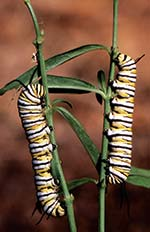
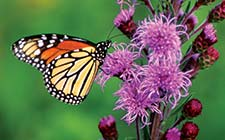

Most people know what a Monarch butterfly looks like: orange, yellow and black with several white spots. But did you ever wonder why you only notice these pretty creatures at certain times of year? Monarch butterflies actually migrate, the way many birds do. They fly south in the fall to a small patch of forest in central Mexico. The entire area in which millions of these butterflies overwinter is just 60 square miles! In spring, they leave this forest of fir trees and head north to lay eggs. (Smaller populations in Oregon and Montana overwinter in southern California.)
Increasingly though, monarchs have a hard time finding food to sustain this journey. Land that formerly flourished with nectar plants is being gobbled up by development. And it's getting harder to find milkweed, the only type of plant monarch caterpillars can eat.
But you can actually help monarchs, and enjoy them in your back yard. Now is the time to get started with summer garden-and-yard projects, so get out there and make room in your yard for a few butterfly-attracting milkweeds and nectar plants. Anyone who plants at least two species of milkweed and at least four nectar plants that bloom at different times of year will earn the right to post a certified 'Monarch Waystation' sign and be listed on the International Monarch Waystation Registry maintained by the nonprofit group Monarch Watch at the University of Kansas. Many waystations are actually schools and businesses, so don't hesitate to get your community involved in this fun, educational project.
It's hardest for the butterflies to find appropriate host plants in extensively developed areas, so if you plant milkweed and/or nectar plants in an urban area, you'll be providing the most assistance to the monarchs. Plus, you'll have lovely new plants to enjoy and be graced by these gorgeous winged creatures year after year as they carry out their 1,500 mile migration.
Have you had success trying to bring monarchs and other butterflies to your garden? We'd love it if you would share your advice with all our readers by posting a comment below.
And don't forget to get out there at the end of summer, and see how many monarchs you can spot flapping their tiny wings all the way to Mexico!
|
 DAVID CAVAGNARO You can help monarch butterfly populations thrive by planting milkweed, the only plant the caterpillars can eat, in your back yard. |
 DAVID CAVAGNARO Meadow Blazing Star (Liatris ligulistylis) is an excellent source of nectar for adult monarch butterflies. And this hardy perennial is easy to grow almost anywhere in North America. |
|